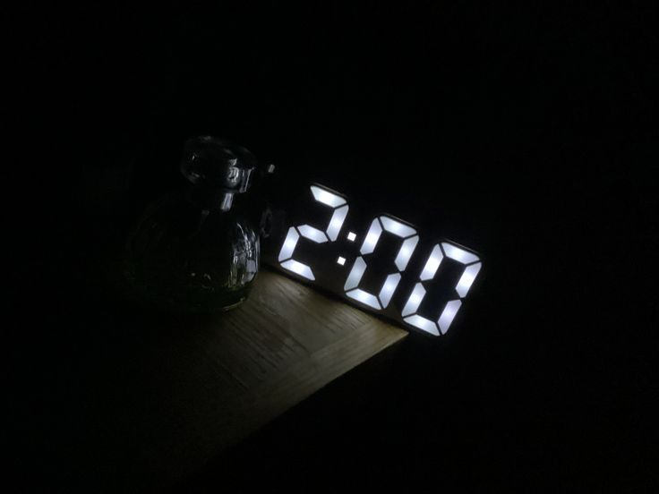

Meus olhos se arregalaram e despertei num sobressalto, ofegante. Durante alguns segundos, permaneci meio zonza, encarando o vazio enquanto tentava compreender onde estava e o que tinha acontecido. Meu coração martelava contra o peito em um ritmo frenético, e uma sensação gelada percorria meu corpo inteiro. No caso, não por consequência do susto, mas por um motivo muito mais ridículo do que isso.
Baixei o olhar e constatei que estava esparramada no chão do quarto, largada de qualquer jeito. Tentei mover os braços e as pernas, mas reduzi o ímpeto no mesmo instante. Cada músculo parecia protestar contra a minha existência, como se meu próprio corpo estivesse decidido a cobrar uma dívida que eu sequer lembrava de ter feito.
— Ngh.. que dor. — resmunguei, deixando escapar um gemido involuntário, um som que ficava em algum lugar entre o humano e um animal ferido. Franzi a testa, ainda tentando organizar as ideias. — Como é que eu vim parar no chão? Eu me movo tanto assim quando durmo? Cruzes...
Eu tentei me levantar outra vez. Dessa vez, fui com mais cautela. Qualquer movimento exigia uma verdadeira negociação diplomática com a dor, naquela altura.
Depois de muito esforço, consegui ficar de pé. Apoiei uma das minhas mãos na lombar por instinto e só então ergui a cabeça para observar o quarto com mais atenção.
O cenário era de uma verdadeira catástrofe.
Roupas espalhadas, objetos jogados pelos cantos, papéis amassados, livros empilhados de maneira duvidosa e outras bugigangas ocupando qualquer espaço livre. A impressão que dava era de que alguém tinha explodido uma bomba ali dentro e, de alguma forma, as paredes continuavam de pé. Era o retrato perfeito de quem vivia ali.
Tudo fora de lugar assim como eu.
Com as pernas ainda bambas e a mente oscilando entre a lucidez e o torpor, decidi me sentar na beirada da cama por alguns instantes. Apoiei os cotovelos sobre as coxas, esfreguei a testa lentamente com a palma da mão e deixei o olhar repousar sobre o chão, permitindo que meus pensamentos corressem livres. Ou, mais precisamente, que voltassem para aquele sonho. Embora chamar aquilo de sonho talvez fosse generosidade demais.
Parecia mais uma piada de mau gosto que a minha própria mente insistia em repetir sempre que eu fechava os olhos. Um espetáculo macabro montado exclusivamente para me arrastar de volta aos lugares que eu daria qualquer coisa para esquecer. Corredores escuros, vozes que preferia nunca mais ouvir, rostos que eu odiava recordar, lembranças que permaneciam enterradas durante o dia, mas que encontravam uma maneira de escapar assim que eu adormecesse.
E isso é uma merda. Pois eu não tenho controle sobre isso.
Durante o sono, minha vontade deixava de importar. Minha cabeça decidia, por conta própria, quais cicatrizes deveriam ser reabertas naquela noite, e eu só podia assistir, impotente, enquanto tudo acontecia outra vez.
Eu sabia, é lógico, que nada daquilo era real. Que eram apenas construções da minha mente, ecos de acontecimentos que já haviam terminado. Mas, você sabe.. a lógica pouco ajudava quando eu estava presa dentro deles. Enquanto duravam, pareciam reais o suficiente para fazer meu peito apertar e meu estômago revirar.
Existem lembranças que eu faria qualquer coisa para nunca mais ter que revisitar de novo. Tenho certeza de que você entende. Ou, pelo menos, espero que entenda.
Deixei escapar um suspiro longo e cansado. Em seguida, ergui o rosto com certa dificuldade e procurei o relógio sobre a mesa de cabeceira. Eu não fazia a menor ideia de quanto havia permanecido desacordada, e, naquele instante, descobrir as horas parecia ser a única coisa concreta à qual eu podia me agarrar.
00:45
da madrugada.
É, eu realmente devia estar no meu limite físico. Dormi demais da conta e, como consequência, sabotei o restante da minha noite.
Por que? Porque agora estou descansada o suficiente para perder uns noventa e nove por cento da vontade de voltar para a cama. Meu cérebro decidiu que esse "cochilo" já valeu por uma noite inteira de sono. Resultado: vou passar horas acordada esperando o sono resolver aparecer outra vez.
E eu já conheço bem o desfecho dessa história. Vou dormir quase de manhã e acordar que nem um cadáver reanimado, sem disposição pra absolutamente nada, passar o dia inteiro bocejando e, no fim, reclamar das consequências de um problema que fui eu mesma quem criou.
Parabéns, Miska. Belíssimo trabalho. Quem mandou deitar sem pensar duas vezes, sua anta?
Balancei a cabeça, ainda afundada no próprio constrangimento. É isso, não adiantava me xingar agora. O estrago já estava feito, e lamentar não faria o relógio voltar alguns minutos.
Só me restava aceitar.
Se existe algum lado positivo nisso tudo, é que vou passar algumas horas acordada e, consequentemente, longe daqueles sonhos malditos. Sendo sincera, depois daquele, não estou com a menor vontade de fechar os olhos outra vez. Se eu puder adiar esse reencontro por mais algumas horas, melhor ainda.
É como dizem, a noite é uma criança. Acho que vou para a sala assistir qualquer coisa. Nem que sejam aqueles jornais chatos pra cacete.
Atualização: Já são 4 horas da madrugada, e depois de consumir uma quantidade obscena de notícias, reportagens aleatórias e programas que eu jamais assistiria em circunstâncias normais e continuo acordada.
Isso tá se tornando agoniante.
Retornar